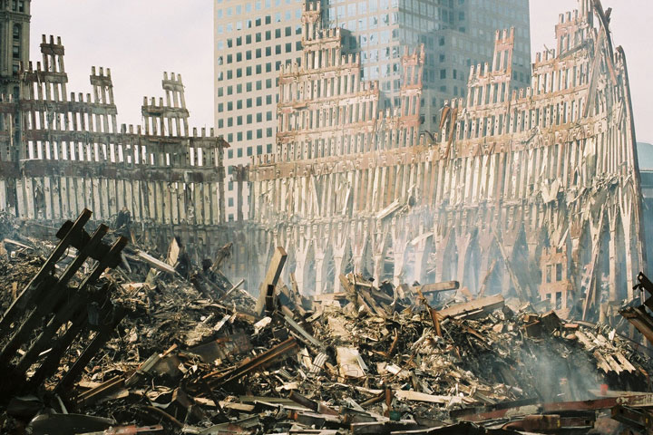

Ávykiø chronologija:
Ávykiai suraðyti Niujorko laiku (UTC-4)
8 val. 45 min. Didelis uþgrobtas lëktuvas Boeing 767-223ER pakilæs ið Bostono Logano oro uosto á Los Andþelà rëþësi á ðiauriná Pasaulio prekybos centro (PPC) dangoraiþá, pramuðdamas jame didþiulæ skylæ. Pastate kilo gaisras.
9 val. 03 min. Antras – keleivinis – lëktuvas Boeing 767-200ER taip pat pakilæs ið Bostono Logano oro uosto á Los Andþelà rëþësi á pietiná PPC dangoraiþá ir sprogo. Uþsiliepsnojo abu pastatai.
9 val. 17 min. Uþdaryti visi oro uostai Niujorko regione.
9 val. 21 min. Uþdaryti visi Niujorko tiltai ir tuneliai.
9 val. 30 min. JAV prezidentas kalbëdamas ið Floridos, pareiðkë, kad prieð Amerikà ávykdytas teroristinis iðpuolis.
9 val. 39 min. G. W. Bush praneðë apie suðaukiamà skubø nacionalinio saugumo tarybos pasitarimà, kai tik gráð á Vaðingtonà.
9 val. 40 min. Pirmà kartà JAV istorijoje atðaukti visi skrydþiai visuose ðalies oro uostuose.
9 val. 43 min. Lëktuvas Boeing 757–223 pakilæs ið Vaðingtono Dulles oro uosto á Los Andþelà rëþësi á Pentagono pastatà. Kilo gaisras. Nedelsiant pradëta darbuotojø evakuacija. Tuometinis Lietuvos prezidentas V. Adamkus vieðbutyje Vaðingtone netoli Pentagono tuo metu dalyvavo susitikime su Amerikos þydø kongreso vadovais.
10 val. 00 min. Sugriuvo pietinis (pirmasis) PPC pastatas. V. Adamkus su specialiuoju eskortu palydëtas á Lietuvos ambasadà Vaðingtone.
10 val. 05 min. Evakuoti Baltieji rûmai.
10 val. 10 min. Sugriuvo dalis paþeisto Pentagono pastato.
10 val. 10 min. Pensilvanijos valstijoje prie Somerseto, suduþo ketvirtasis uþgrobtas keleivinis „United Airlines“ lëktuvas Boeing 757–200, skridæs ið Niuarko oro uosto á San Franciskà. Lëktuvo keleiviai, suþinojæ apie kitus tris uþgrobtus lëktuvus, pasiprieðino teroristams ir bandë perimti lëktuvo valdymà. 

10 val. 13 min. Evakuotas Jungtiniø Tautø pastatas Niujorke.
10 val. 22 min. Vaðingtone, prie Valstybës departamento, automobilyje susprogdinta bomba.
10 val. 25 min. Visi tarptautiniai oro skrydþiai á JAV nukreipti á Kanadà.
10 val. 29 min. Sugriuvo antrasis PPC pastatas.
10 val. 45 min. Evakuoti visi federaliniai pastatai Vaðingtone.
11 val. 16 min. CNN praneðë, kad Ligø kontrolës ir prevencijos centro bioterorizmo komandos pasiruoðusios reaguoti á galimus iðpuolius.
11 val. 18 min. „American Airlines“ patvirtino, kad suduþo du ðios kompanijos lëktuvai su 150 þmoniø.
11 val. 59 min. „United Airlines“ patvirtino, kad suduþo du lëktuvai su 110 þmoniø.
12 val. 04 min. Evakuotas Los Andþelo tarptautinis oro uostas, á kurá skrido abu pagrobti „American Airlines“ lëktuvai.
12 val. 15 min. Evakuotas ir uþdarytas San Francisko tarptautinis oro uostas, á kurá skrido lëktuvas, nukritæs Somersete.
13 val. 04 min.Jungtiniø Valstijø prezidentas G. W. Bush, kalbëdamas ið nenustatytos vietos, praneðë, kad imtasi visø reikalingø saugumo priemoniø ir kad JAV kariðkiams visame pasaulyje paskelbta parengties padëtis.
17 val. 00 min. BBC World televizija praneðë, kad sugriuvo septintasis PPC pastatas, nors ið tiesø pastatas dar nebuvo pradëjæs griûti.
17 val. 20 min. Sugriuvo septintasis PPC pastatas.

Su rugsëjo 11 atakomis yra susijæ labai daug ðiø laikø mitø ir sàmokslø teorijø. Jiems paremti nepateikiami árodymai arba pasitelkiamos ávairios spekuliacijos. Taèiau oficialiai versijai árodymø taip pat trûksta - tyrimas nebuvo atliktas tinkamai. Tyrëjai neieðkojo ávykio vietoje sprogmenø pëdsakø (kas yra pagrindinis skeptikø argumentas.) O yra manoma, jog pastatai negalëjo nugriûti, kaip teigiama oficialiose iðvadose, nuo ugnies, kadangi aviacinis kuras nedega tokia temperatûra, kad iðlydytø ðiø pastatø plienà. Galiausiai, pastatai nugriuvo beveik laisvu pagreièiu, o tai leidþia manyti, jog viso pastato konstrukcija buvo paþeista.
Numerologija
Daþnos spekuliacijos susijusios su numerologija. Pavyzdþiui, 9-11 (rugsëjo 11) skaitmenys atitinka 911 (JAV pagalbos numeris). Arba 9 + 1 + 1 = 11.
Sàmokslø teorijos
Viena labiausiai paplitusiø sàmokslø teorijø, kad ðias atakas ið tiesø organizavo JAV vyriausybë arba specialiosios tarnybos. Motyvai nurodomi ávairûs, daþniausias – pretekstas pradëti karà Afganistane ir Irake, pilieèiø teisiø apribojimas prisidengiant kova su terorizmu (Patrioto aktas). Praktiðkai visas ðias teorijas galima suskirstyti á dvi kategorijas: JAV vyriausybë kaþkuriuo tikslu leido ðiai katastrofai atsitikti. JAV vyriausybë kaþkuriuo tikslu ðià katastrofà suorganizavo. Vienas ið daþniausiø árodymø paremti ðiems teiginiams yra teorija, jog bokðtø griuvimas – toks, koks jis buvo – galëjo bûti sukeltas tik ið anksto pastatuose iðdëliotø sprogmenø ir jokiu bûdu ne ásirëþusiø lëktuvø. [5] Teigiama, kad pastatai sugriuvo pernelyg tvarkingai ir greitai, manoma, kad jei pastatai bûtø griuvæ, jie nebûtø taip taisyklingai sugriuvæ – bûtø virtæ á ðonà, o ne visi trys tvarkingai sugriuvæ. Taip pat, kad po gaisro sugriuvo 3 pastatai, nors tik á 2 ið jø trenkësi lëktuvai. Sàmokslø teorijø nurodomi iðpuolio tikslai: Sukurti JAV valstybei naujà prieðà – islamiðkas valstybes; Pasipelnyti ið akcijø birþos svyravimø; Pagal kai kurias sàmokslø teorijas spekuliuojama, kad iðpuolá surengë þydø sionistai, siekdami suversti kaltæ savo prieðams musulmonams.